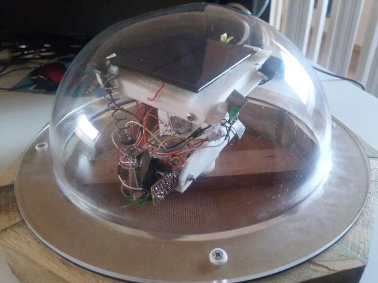

Scientific discovery depends on the ability to create repeatable conditions, observe biological processes objectively and transform experimental results into useful knowledge. Our platform has been designed around that principle.

Here is one example of pure engineering project which impacts directly
Biological systems during experimentation.
The Remote Light Station (ROLIS for short) presented above is measuring the light intensity by tracking the light source.
It is especially important in experiments which are using partially natural light (conservatory type).
If the light is not enough for the biological sample under test, artificial light is provided.
This equipment reduces the energy required to support the sample and at the same time ensures best possible light conditions.
Rather than developing a single laboratory instrument, Aurelia BioSystems has evolved into a modular research platform. Each subsystem performs a specific task while sharing data with the rest of the platform. The result is an integrated environment capable of designing, executing, monitoring and analysing biological experiments.
Temperature, humidity, illumination and liquid circulation are regulated automatically to provide repeatable experimental conditions.
Automated image acquisition enables objective measurement of growth, morphology and temporal development throughout an experiment.
Image processing during time lapse is used to monitor small but persistant changes between tested and control samples.
Monitoring the behaviour of seeds under different conditions provides large field of experimentation.
Light conditions are very important factor in cells.
Use machine learning to identify relationships between environmental conditions and biological development, helping researchers optimise experiments more efficiently.
Develop computational models that mirror physical experiments, supporting prediction, comparison and optimisation before new experiments are performed.
Extend the platform with multispectral, fluorescence and other specialised imaging techniques for broader biological research. Allow the machine learning algorithms to modify parameters and measure results.
Connect multiple experimental systems through a common cloud infrastructure, enabling collaborative research across different locations with goal to create Predictive Growth Model.
The platform has been designed to evolve through collaboration with universities, research institutes and industrial partners. New sensors, imaging systems, analytical methods and control algorithms can be integrated into the existing architecture to support future scientific challenges.
Start a Conversation